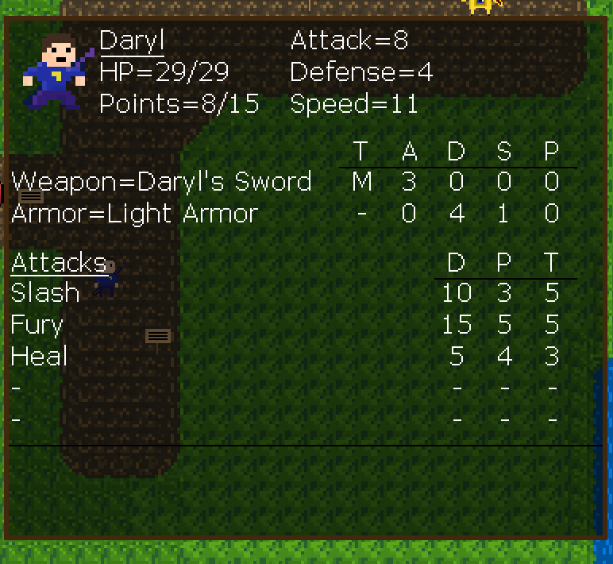
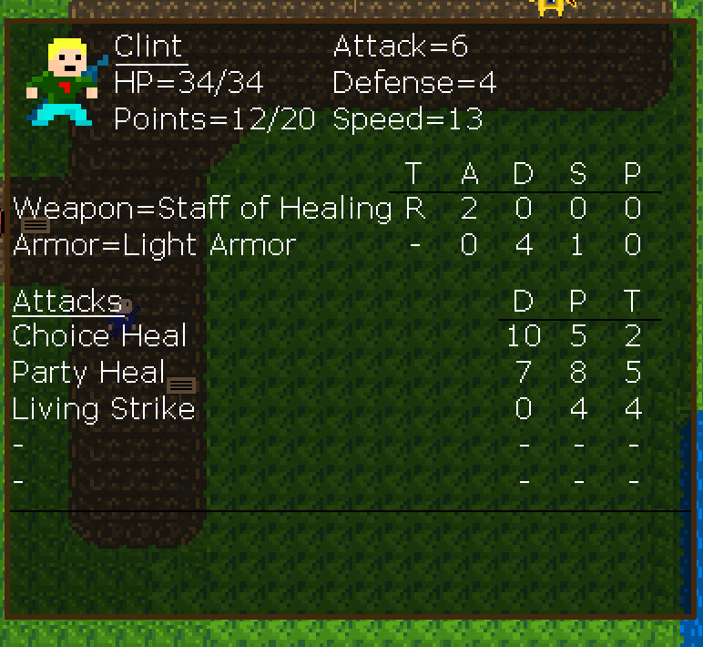
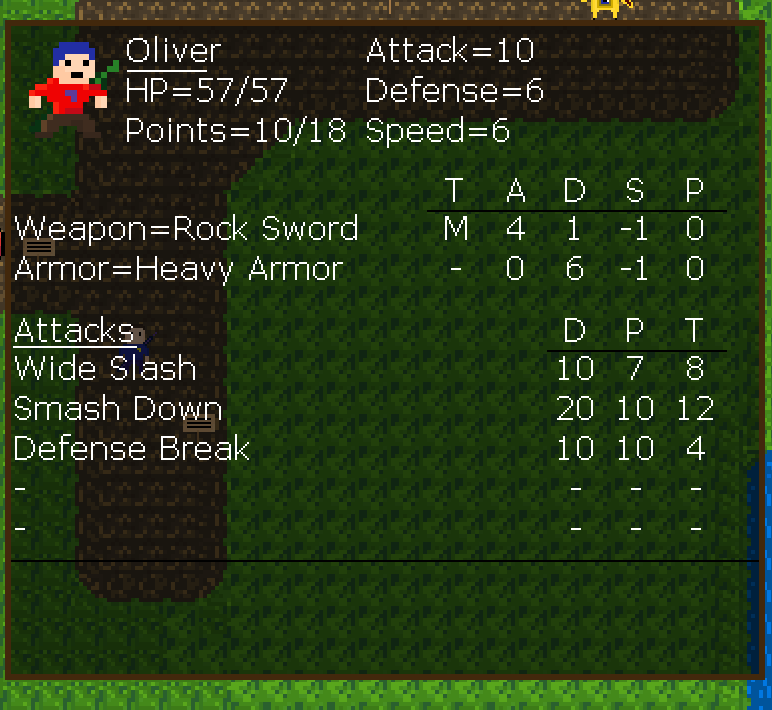
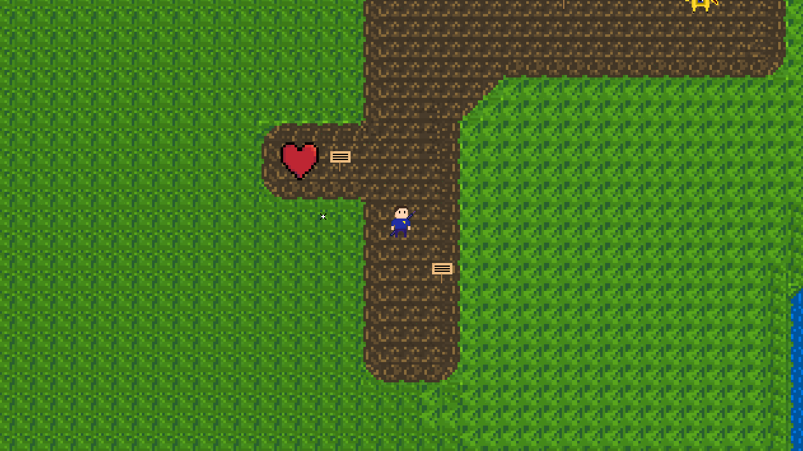
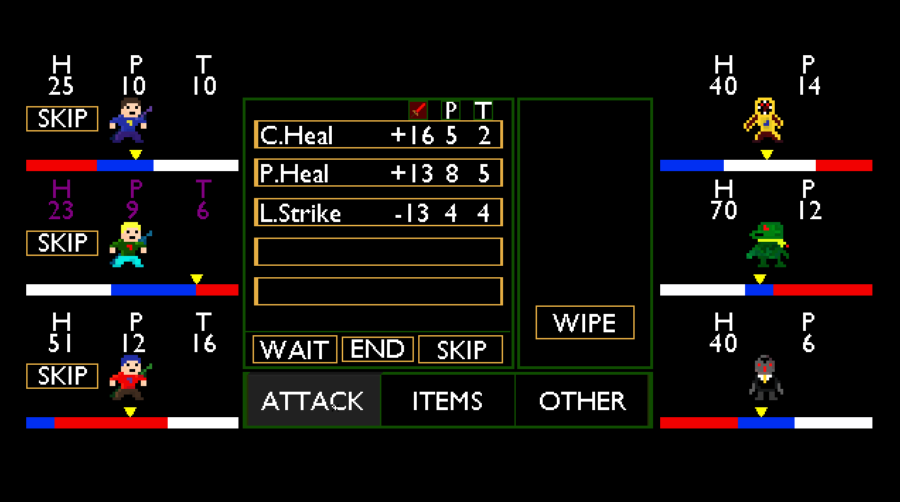

June 4, 2019.
Hello again everyone, it’s been awhile. I apologize for the long wait, but I am back with some updates to the game. We have some new menus in the overworld and some bug fixes in the battle system.
First, the most noticeable change is in the overworld menu. When you open the menu, you can now click on the characters to get a more detailed look into their specific stats. You can see your stats, your equipment and attacks. Everything also has a description that shows up when you hover over any element of the menu. Furthermore, if you want to change your equipment you can click on weapon or armor to go to their respective menus. Any changes made there will be reflected in the party menu.




It took me a long time to decide how I wanted the menu to look. I wanted to do this at the beginning of the update, but I decided to work on the item buffs instead. This worked out well because I would have had to change the design of the party menu if I did it first. This also made me realize that the attack system is not as robust as I initially thought. Getting the dynamic attack information into the menu is impossible to do in its current state, so I expect to have to update the attack system to be on par with everything else.
Next, we have some battle changes. First big change has to do with buffs that I added in back in this dev-log. Before, the buffs would last until the arrow looped around the timeline. This became a problem with Clint whose attack phase is right next to the end of his timeline. This meant that after the attack phase, the buff would go away. Here is a gif to show off the problem (even though the low framerate makes it hard to see).

I have fixed this issue so that at the beginning of the attack phase the buff goes away. In the future, I will have to change it again to be on a timer. This is so if someone gets a buff in the middle of the timeline, it will end in the middle of the timeline instead at the attack phase; but for now, this works.
I also have fixed many bugs that I found with the battle system. Everything from attacking early, to not attacking at all was covered. I have fixed everything that I could find, and it is by far the most polished element of the game. I am happy how everything works together between all the stats and characters.
However, for the future, in order to speed along updates, I may limit the amount of polish things get. I realize now that many of the elements I am polishing will be changed at some point in the future, especially visual elements.
The next thing to add is a shop system. A place to buy more items and equipment to use on your adventures. Hopefully I can get that done sooner rather than later.
Thanks for reading,
Andy